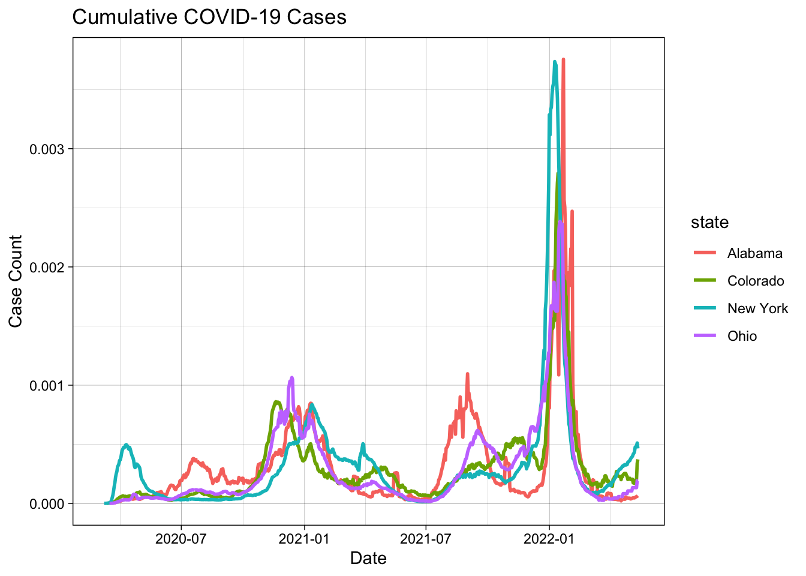

library(tidyverse)
library(flextable)
library(zoo)
data <- read_csv("https://raw.githubusercontent.com/nytimes/covid-19-data/master/us-counties.csv")Lab 3: COVID-19 Wrangling
Ecosystem Science and Sustainability 330
Question 1: Public Data
Question 2: Daily Summary
my.date <- as.Date("2022-02-01")
my.state <- "Colorado"
colorado_data <- data %>%
filter(state == "Colorado") %>%
group_by(county) %>%
arrange(date) %>%
mutate(new_cases=cases-lag(cases),
new_deaths=deaths-lag(deaths)) %>%
ungroup()
top_cumulative_cases <- colorado_data %>%
filter(state == my.state, date == my.date) %>%
select(Date = date, County = county, Cases = cases) %>%
slice_max(Cases, n = 5)
most_new_cases <- colorado_data %>%
filter(state == my.state, date == my.date) %>%
select(Date = date, County = county, Cases = new_cases) %>%
slice_max(Cases, n = 5)
flextable(top_cumulative_cases) %>%
set_caption("Top 5 Counties in Colorado with the Most Cumulative COVID Cases")Date | County | Cases |
|---|---|---|
2022-02-01 | El Paso | 170,673 |
2022-02-01 | Denver | 159,022 |
2022-02-01 | Arapahoe | 144,255 |
2022-02-01 | Adams | 126,768 |
2022-02-01 | Jefferson | 113,240 |
flextable(most_new_cases) %>%
set_caption("Top 5 Counties in Colorado with the Most New COVID Cases")Date | County | Cases |
|---|---|---|
2022-02-01 | El Paso | 630 |
2022-02-01 | Arapahoe | 401 |
2022-02-01 | Denver | 389 |
2022-02-01 | Adams | 326 |
2022-02-01 | Jefferson | 291 |
Question 3: Normalizing Data
pop_data <- read.csv('https://www2.census.gov/programs-surveys/popest/datasets/2020-2023/counties/totals/co-est2023-alldata.csv')
# 3.1
pop_data <- pop_data %>%
filter(COUNTY != 0) %>%
mutate(fips = paste0(sprintf("%02d", STATE),
sprintf("%03d", COUNTY))) %>%
select(fips, contains("NAME"), contains("2021"))
# 3.2
names(pop_data) [1] "fips" "STNAME" "CTYNAME"
[4] "POPESTIMATE2021" "NPOPCHG2021" "BIRTHS2021"
[7] "DEATHS2021" "NATURALCHG2021" "INTERNATIONALMIG2021"
[10] "DOMESTICMIG2021" "NETMIG2021" "RESIDUAL2021"
[13] "GQESTIMATES2021" "RBIRTH2021" "RDEATH2021"
[16] "RNATURALCHG2021" "RINTERNATIONALMIG2021" "RDOMESTICMIG2021"
[19] "RNETMIG2021" dim(pop_data)[1] 3144 19nrow(pop_data)[1] 3144str(pop_data)'data.frame': 3144 obs. of 19 variables:
$ fips : chr "01001" "01003" "01005" "01007" ...
$ STNAME : chr "Alabama" "Alabama" "Alabama" "Alabama" ...
$ CTYNAME : chr "Autauga County" "Baldwin County" "Barbour County" "Bibb County" ...
$ POPESTIMATE2021 : int 59203 239439 24533 22359 59079 10143 18890 115678 34488 25074 ...
$ NPOPCHG2021 : int 288 6212 -436 171 -28 -86 -135 -565 -163 105 ...
$ BIRTHS2021 : int 686 2337 270 240 654 111 227 1250 392 254 ...
$ DEATHS2021 : int 696 2948 390 325 875 160 297 1843 592 442 ...
$ NATURALCHG2021 : int -10 -611 -120 -85 -221 -49 -70 -593 -200 -188 ...
$ INTERNATIONALMIG2021 : int 15 105 0 1 9 1 5 12 22 7 ...
$ DOMESTICMIG2021 : int 242 6972 -313 254 141 -42 -75 -70 -6 284 ...
$ NETMIG2021 : int 257 7077 -313 255 150 -41 -70 -58 16 291 ...
$ RESIDUAL2021 : int 41 -254 -3 1 43 4 5 86 21 2 ...
$ GQESTIMATES2021 : int 484 3351 2248 1994 616 1578 285 5407 856 278 ...
$ RBIRTH2021 : num 11.62 9.89 10.91 10.78 11.07 ...
$ RDEATH2021 : num 11.8 12.5 15.8 14.6 14.8 ...
$ RNATURALCHG2021 : num -0.169 -2.585 -4.848 -3.816 -3.74 ...
$ RINTERNATIONALMIG2021: num 0.254 0.4443 0 0.0449 0.1523 ...
$ RDOMESTICMIG2021 : num 4.1 29.5 -12.65 11.4 2.39 ...
$ RNETMIG2021 : num 4.35 29.95 -12.65 11.45 2.54 ...3.2
In the dataset, there are 19 columns. The FIP in the population data matches the locations of the fips in the original COVID data. The dimensions of the population dataset is 3144 x 19, which contains more columns than the COVID data.
# 3.3
colorado_pop_data <- pop_data %>%
filter(str_starts(fips, "08"))
range(colorado_pop_data$POPESTIMATE2021)[1] 741 7372873.3
The range of populations seen in Colorado counties in 2021: 741 to 737,287.
merged_data <-
left_join(colorado_data, pop_data, by="fips")
# 3.4
pop_data <- pop_data %>%
rename(state = STNAME)
per_capita = inner_join(colorado_data,
select(pop_data, fips, pop = POPESTIMATE2021),
by = 'fips') %>%
filter(date == my.date) %>%
mutate(cumulative_percap = cases / pop,
newcases_percap = new_cases / pop,
newdeaths_percap = new_deaths / pop)
per_capita_totals <- per_capita %>%
summarize(totalcumulativecases = sum(cumulative_percap),
totalnewcases = sum(newcases_percap),
totalnewdeaths = sum(newdeaths_percap))
# 3.5
top_cumulative_cases_per_capita <- per_capita %>%
arrange(desc(cumulative_percap)) %>%
select(county, cumulative_percap) %>%
slice(1:5)
flextable(top_cumulative_cases_per_capita) %>%
set_caption("Top 5 Counties in Colorado with the Most Cumulative COVID Cases Per Capita on 2021-01-01")county | cumulative_percap |
|---|---|
Crowley | 0.5117698 |
Bent | 0.4118749 |
Pitkin | 0.3429659 |
Lincoln | 0.3424082 |
Logan | 0.3047701 |
top_per_capita_new_cases <- per_capita %>%
arrange(desc(newcases_percap)) %>%
select(county, newcases_percap) %>%
slice(1:5)
flextable(top_per_capita_new_cases) %>%
set_caption("Top 5 Counties in Colorado with the Most New COVID Cases Per Capita on 2021-01-01")county | newcases_percap |
|---|---|
Crowley | 0.009764603 |
Bent | 0.004120622 |
Sedgwick | 0.003869304 |
Washington | 0.002875924 |
Las Animas | 0.002651039 |
Question 4: Rolling Thresholds
county_cases <- pop_data %>%
inner_join(colorado_data, by = "fips") %>%
filter(between(date, my.date - 13, my.date)) %>%
group_by(county) %>%
summarize(recent_cases = sum((new_cases/POPESTIMATE2021) * 100000)) %>%
ungroup()
recent_county_cases <- county_cases %>%
arrange(desc(recent_cases)) %>%
slice(1:5) %>%
select(county, recent_cases)
flextable(recent_county_cases) %>%
set_caption("Top 5 Counties in Colorado with the Most New Cases Per 100,000 Residents in the Past 2 Weeks")county | recent_cases |
|---|---|
Crowley | 3,923.278 |
Lincoln | 3,599.488 |
Alamosa | 3,594.909 |
Mineral | 3,336.921 |
Conejos | 3,152.203 |
Question 5: Death Toll
county_deaths <- colorado_data %>%
mutate(year = lubridate::year(date)) %>%
filter(year == 2021) %>%
group_by(fips) %>%
summarize(totaldeaths = sum(new_deaths, na.rm = TRUE)) %>%
left_join(pop_data, by = c("fips")) %>%
mutate(
death_ratio = 100 * (totaldeaths / DEATHS2021)
) %>%
select(CTYNAME, totaldeaths, DEATHS2021, death_ratio) %>%
filter(death_ratio > 20)
ggplot(county_deaths) +
geom_col(aes(x = death_ratio, y = CTYNAME), fill= "blue") +
theme_bw() +
labs(
title = "Colorado Counties Where COVID Deaths 20% of Total Deaths (2021)",
x = "County",
y = "Percentage of Total Deaths from COVID")Question 6: Multi-state
# 6.1
state_data <- data %>%
group_by(date, state) %>%
summarize(cases = sum(cases)) %>%
filter(state %in% c("New York", "Colorado", "Alabama", "Ohio")) %>%
group_by(state) %>%
mutate(
newcases = cases - lag(cases),
roll = zoo::rollmean(newcases, k = 7, align = "right", fill = NA)
) %>%
ungroup()
# 6.2
ggplot(state_data, aes(x = date)) +
geom_col(aes(y = newcases), fill = "steelblue", col = NA) +
geom_line(aes(y = roll), col = "red", linewidth = 1) +
theme_bw() +
facet_wrap(~state, nrow = 2, scales = "free_y") +
labs(
title = "Cumulative COVID Cases",
x = "Date",
y = "Case Count")# 6.3
state_pop_data <- inner_join(state_data, pop_data, by = "state") %>%
filter(date == my.date) %>%
mutate(
cumulative_percap = cases / POPESTIMATE2021,
newcases_percap = newcases / POPESTIMATE2021
)
state_pop_sums <- state_pop_data %>%
filter(state %in% c("Colorado", "Alabama", "Ohio", "New York")) %>%
group_by(state) %>%
summarize(totalcases_percap = sum(newcases_percap, na.rm = TRUE))
print(state_pop_sums)# A tibble: 4 2
state totalcases_percap
<chr> <dbl>
1 Alabama 14.5
2 Colorado 41.4
3 New York 6.44
4 Ohio 12.0 state_rolling_cases <- state_pop_data %>%
group_by(date, state) %>%
filter(state %in% c("Colorado", "Alabama", "Ohio", "New York")) %>%
group_by(state) %>%
mutate(
recentcases_percap = mean(sum(newcases_percap)),
roll = zoo::rollmean(newcases_percap, k = 7, align = "right", fill = NA)
) %>%
ungroup()
state_rolling_cases <- state_rolling_cases %>%
select(-CTYNAME)
# 6.4
state_plot = pop_data %>%
group_by(state) %>%
summarize(state_pop = sum(POPESTIMATE2021)) %>%
inner_join(state_data, by = c("state")) %>%
mutate(per_capita = newcases / state_pop) %>%
group_by(state) %>%
mutate(
roll = zoo::rollmean(per_capita, k = 7, align = "right", fill = NA)
) %>%
ungroup()
ggplot(state_plot, aes(x = date)) +
geom_line(aes(y = roll, col = state), size = 1) +
theme_linedraw() +
labs(
title = "Cumulative COVID-19 Cases",
x = "Date",
y = "Case Count") 
6.5
Scaling by population had a significant influence on the analysis. It normalized case counts relative to the state size. The 7-day mean was also more accurate for looking at the impact on health on per capita cases.
Question 7: Space & Time
# 7.1 and 7.2
spatialdata = read_csv("https://raw.githubusercontent.com/mikejohnson51/csu-ess-330/refs/heads/main/resources/county-centroids.csv") %>%
inner_join(data, by = "fips") %>%
group_by(date) %>%
summarize(cases_weightedmean_x = sum(LON*cases, na.rm = TRUE) / sum(cases, na.rm = TRUE),
cases_weightedmean_y = sum(LAT*cases, na.rm = TRUE) / sum(cases, na.rm = TRUE)) %>%
arrange(date) %>%
mutate(
Month = format(date, "%m")
) %>%
mutate(
d = 1:n()
)
# 7.3
ggplot(spatialdata) +
borders("state", fill = "gray90", colour = "white") +
geom_point(aes(x = cases_weightedmean_x, y = cases_weightedmean_y),
color = "blue", alpha = 0.25) +
labs(
color = "Month",
size = "Cases",
x = "Longitude", y = "Latitude",
title = "Weighted Center of COVID-19 Cases") +
theme(legend.position = "none") 7.4
The weighted mean center for COVID cases can be seen mainly in the central US. Ranging from Utah to Ohio (with an outlier in Washington), you can see the surge of cases in the midwest in states like Missouri and Indiana. Possible drivers of this movement are local outbreaks in large cities.